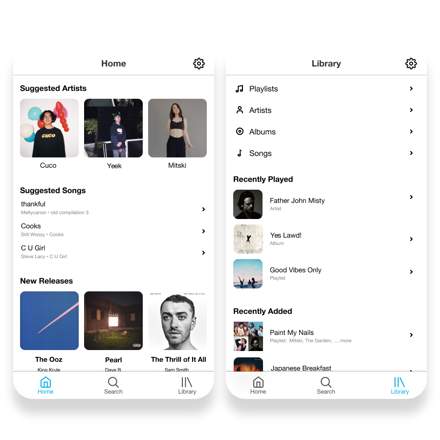
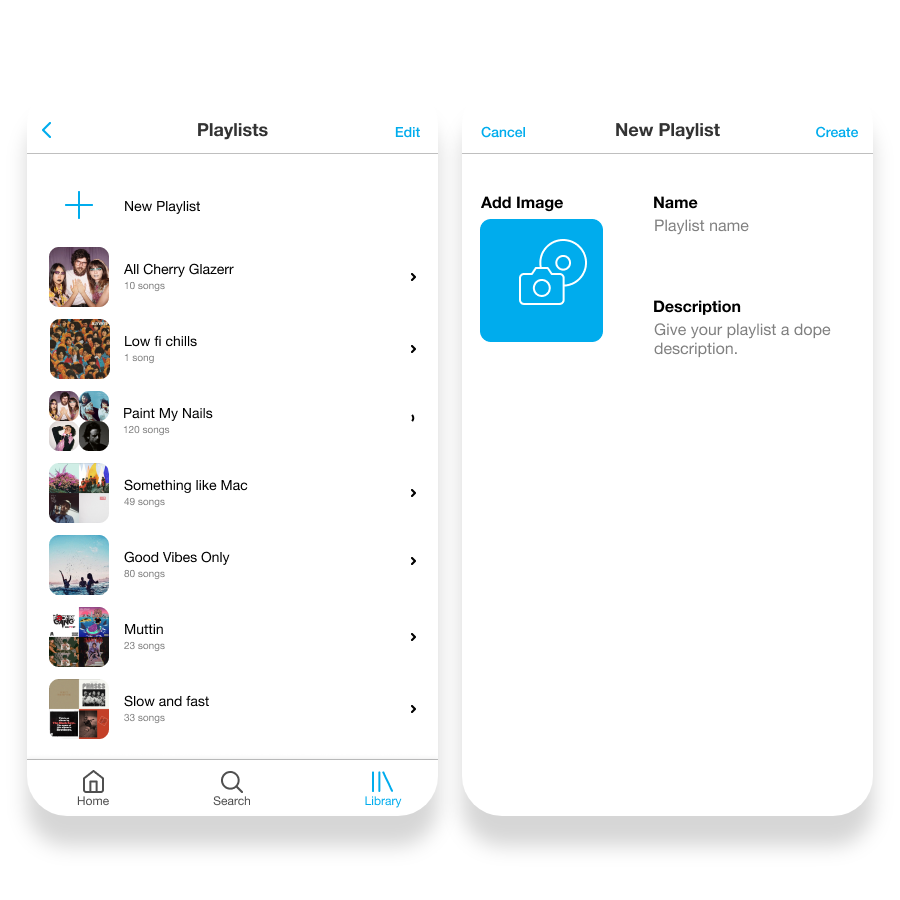
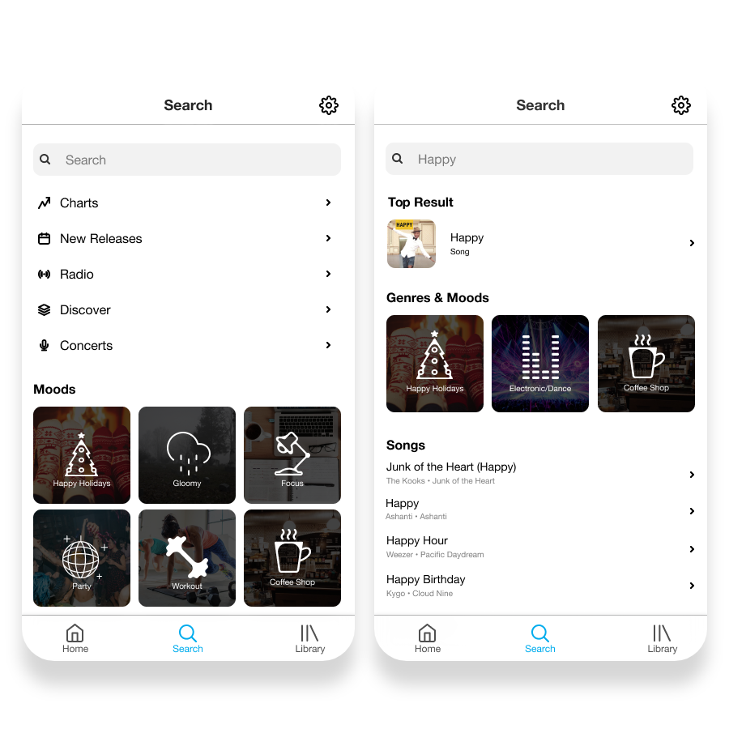
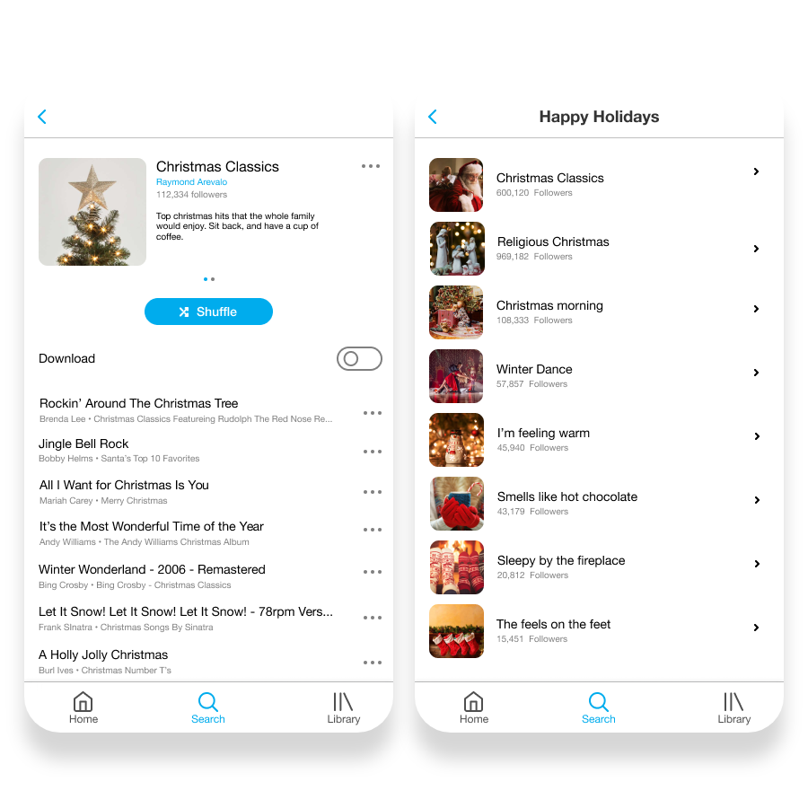

MUSIC APPLICATION REDESIGN
Note: this is not done by official Spotify nor Apple Music teams. This is just a concept our team (Shreeman Hariharan, Cindy Tang, Susan Lee) made up for a school project.
Problem
Most music streaming applications, Spotify and Apple Music, are not constructed to provide good user experiences to their common workflows: constructing, managing, and searching for music and playlists. The following are reasons for difficulties.
- Lack of call to actions.
- Poor consistency and standards.
- Issues with recognition vs. recall.
- Memory overload / cognitive overflow caused for less use of applications.
Goal
Provide an intuitive way for users to construct, managed, and search for music and playlists while keeping the same functionalities found in common music applications.
Team and Role
I worked primarily on design decisions and prototype creation. However, I did participate in each step of our design process.
/////
RESEARCH
User Interviews
To understand the context in which our system would be used, our team conducted 9 interviews on users mainly aged 18-25 who regularly listened to music off their mobile device. Here are our discoveries:
- Most used features - create playlist, search bar, music library, and download playlist.
- Least used features - homepage, radio, and browse.
- Spotify dominated the market.
Scenarios
From our analysis of user interviews we constructed 10 common scenarios experience when using these applications.
- Creating a playlist to teach a class.
- Creating a playlist for a certain sound.
- Creating a playlist to learn more about a new genre of music.
- Deleting songs off playlists.
- Updating a collaborative playlist.
- Editing playlist to reflect current song preferences.
- Browsing through related artists to stream new music.
- Using the mobile app hands-free.
- Queueing a song.
Workflow test
To get a better understanding of good and less good user experiences and workflows, our team conducted user testing on general scenarios seen in music applications. Our findings can be summarized as:
- Spotify's workflow proved to be overall better.
- Easy to make themed playlists on Spotify.
- Centralized information on Apple Music allowed for better searching methods.
- Versatile search methods allow for easy playlist creation.
- Salient features allowed for a straightforward process.
- Simplicity allowed for an effortless experience on Spotify.
Competitive analysis
To get a better understanding of commonly used information architecture in music applications, our team did a competitive analysis of the navigation structures and labels used in Spotify, Apple Music, and Spinrilla. We discovered:
- Search, library, and radio were all prevalent on the first level of hierarchy of all music applications.
- We found that there were at most 3 levels of hierarchy in all navigational structures.
Pain points
Summarising the research I have discussed, I have developed the following pain points:
- The functionality of browse and radio had to be changed
- There are issues with searching, creating, and managing
- Lack of call to actions
- Poor consistency and standards
- Issues with recognition vs. recall
- Memory overload / cognitive overflow caused for less use of applications.
//////
SOLUTIONS
Starting from the pain point, I tried to find solutions to solve them and introduce new features overall to improve the user experience. I wireframed on a whiteboard with my team for quick and fast ideation.


Wire frame and ideating session
I then took the design decisions seen in the wireframes and converted them hi-fidelity mockups. I used Apple and Spotify design elements as a basis for creating elegant UI.




Hi fidelity mockups
I have separated the solutions into categories that best represents the solution.
Architecture
Overall, the main change I have made to the architecture of the application was to remove the radio and browse sections to from the main navigation and include them in the search section.
- Navigation - A new navigation bar was designed that includes only home, search, and library so that the user has enough accelerators to navigate the application while maintaining a low cognitive workload.
- Search - The new search starter page was designed to include various call to actions which include the excluded 2 sections: browse and radio. This was done to make searching more intuitive.
Function
There were a few functions I've introduced in various locations throughout the app in order to meet the pain points listed earlier.
- Merging - A merging feature in our edit playlist section was introduced in order to give users more control when creating and managing playlists. Since merging was not an available feature in all popular music apps that we analyzed, our initial thought was not clear. Do we include it in the playlists section or do we include it as an option when selecting more on a playlist? However, through further discussion, we decided to include the merging feature in the edit playlists page. Our reasoning behind this was based off the purpose of the edit playlists page. Why have a page to delete playlists when you could delete a playlist by pressing more on that playlist? It was obvious that this page was meant for users to delete multiple playlists at once. Working off this convention, we decided to use the selection feature of this page to either be for deleting or for merging.
- Music Info Swipe - A swipe function was added to a playlist/song/album header in order to provide an easy way for users to view all necessary information. With the higher priority information displayed on the first view and the less in the latter views. Quick switch between screens allowed for increased recognition rather than recall. While less information in each view allowed for decreased stimuli presented to the users' memory load.
- Search by Genres & Moods - An old function introduced by Spotify, genres & moods was added to search results as a call to action. This added feature made searching more intuitive as it made search results more selective and catered towards the keyword.
Format
Overall, there were a lot of format changes throughout the app in order to make the presented information more consistent in standards, user centered, and functional.
- Playlist description / format - It was decided to move the album picture to the left and have the text frame on the right side to create a natural flow for the user's eye. The name of the album and creator of the album would be the first immediate information that users see, then the description to further understand what kind of music is on there. This decision was based off results from user testing as it was revealed that the nature of the playlist information layout was confusing to the user.
- Home content - The homepage was redesigned to prioritize information, be user centered, and minimize cognitive workload. The home page included 'Suggested Artists,' 'Suggested Songs,' and 'New Releases.' Another change made to the homepage content was the use of 3, rather than 2, modals of information. A cut back in information to only 3 categories of information with 3 modals each proved to be concise, but power.
- Universal Pricing - To improve consistency and standards, it was decided to position all headings to the left and place playlists from only top to bottom. The decisions were based on the intuition of decreasing the users' mental effort in distinguishing the difference between headers and playlist positioning.
///////
CONCLUSION
Unfortunately we were not able to conduct user interviews and observations to test our design solution. We did not have the time to take further action. If we had more time to complete the project, we would have allocate more resources and effort into testing our prototype so we could iterate to a better design solution.
Overall, this project opened me up to a new world. It gave me a better understanding of prototype design. From conducting user interviews to analyzing good workflow, and from competitive analysis of information architecture to prototype redesign, I was able to learn the steps that a user experience researcher does when create good intuitive design.
Overall, this project opened me up to a new world. It gave me a better understanding of prototype design. From conducting user interviews to analyzing good workflow, and from competitive analysis of information architecture to prototype redesign, I was able to learn the steps that a user experience researcher does when create good intuitive design.